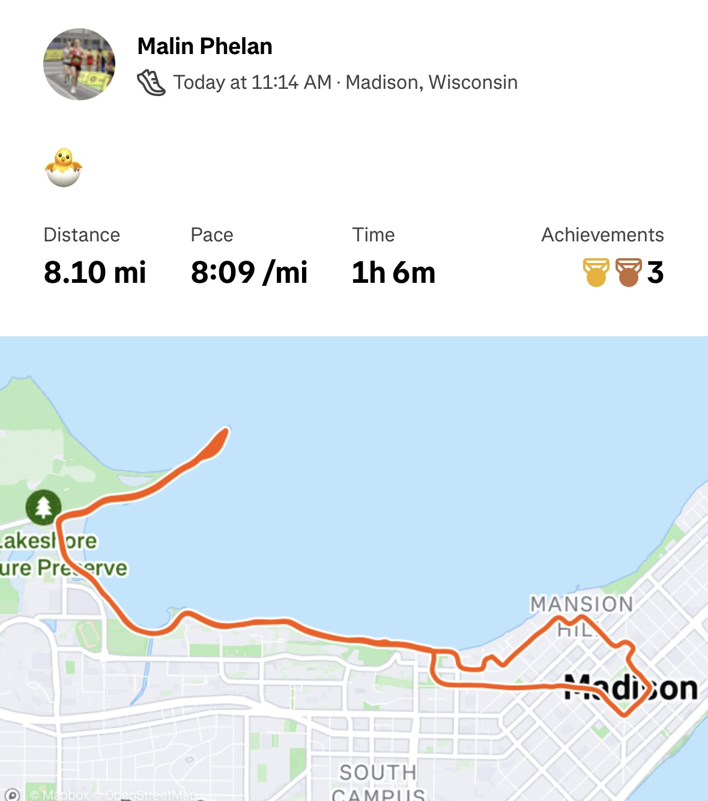

I began running, like many other people, during quarantine when the gyms were closed and I needed to find another way to workout.
I fell in love with running for the way that it made me feel.
This is not to say that it came easily to me at first. I had to have a lot of grit to get used to running for a prolonged period of time.

Once I began running 6+ miles consistently, running became an important part of my life. I ran long distance in track in high school, running the mile and the two mile race.
Now in college, though I don't run for a team, I continue to do so because of the benefits that it has for both my physical and my mental health.
I am planning on running a marathon in the next year - stay tuned!
I use the app Strava to track my runs.
Strava is helpful for a number of reasons - I get all kinds of statistics on my pace, heart rate, and elevation.
Furthermore, it allows me to connect with friends. You can give "kudos" to cheer someone on after they have uploaded their run, which is a feature that I love.
Below is an example of a run that I tracked on Strava.
